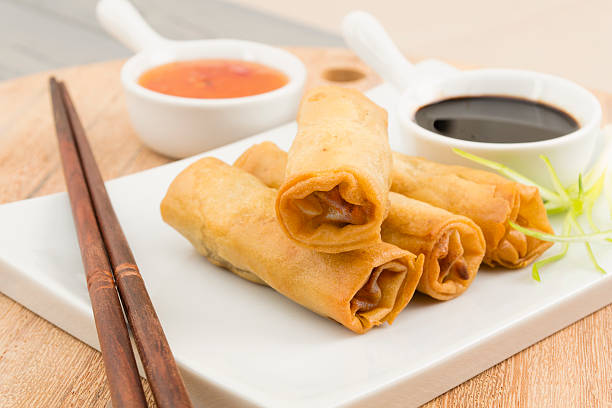

Lumpia

Description
Lumpia is enjoyed by many Filipinos and non-filipinos throught the world. There are several differnt styles of lumpia, and most are delicious.
Ingrediants
- Lumpia wrapper
- Filling consisting of:
- Mixed vegtables
- Meat
- Spices: Salt, soy sauce, pepper, fish sauce, etc.
Steps
- Cook meat and season to taste (for less salt, do not season until combined with vegtables)
- Cook Mixed Vegtables
- Combine Vegtables and Meat and simmer on stove for 5 minutes, season to taste
- After seasoning, allow to sit and combine flavors for 5 - 10 minutes until cooled.
- Drain in colendar and place colendar back on pot to allow for full draining.
>
- While vegtables and meat filling are cooling, seperate or cook lumpia wrappers
- Take a single lumpia wrapper and place 1-2 tablespoons of filling on lumpia wrapper halfway between the center and the edge towards you.
- Take the edge towards you and start to role it over the filling.
- Role about a third of the way and then fold the sides in (like an egg role or burrito)
- Finish roling and set aside for frying later
- Fry in favorite oil, best if mild flavored like canola, but EVOO works too.